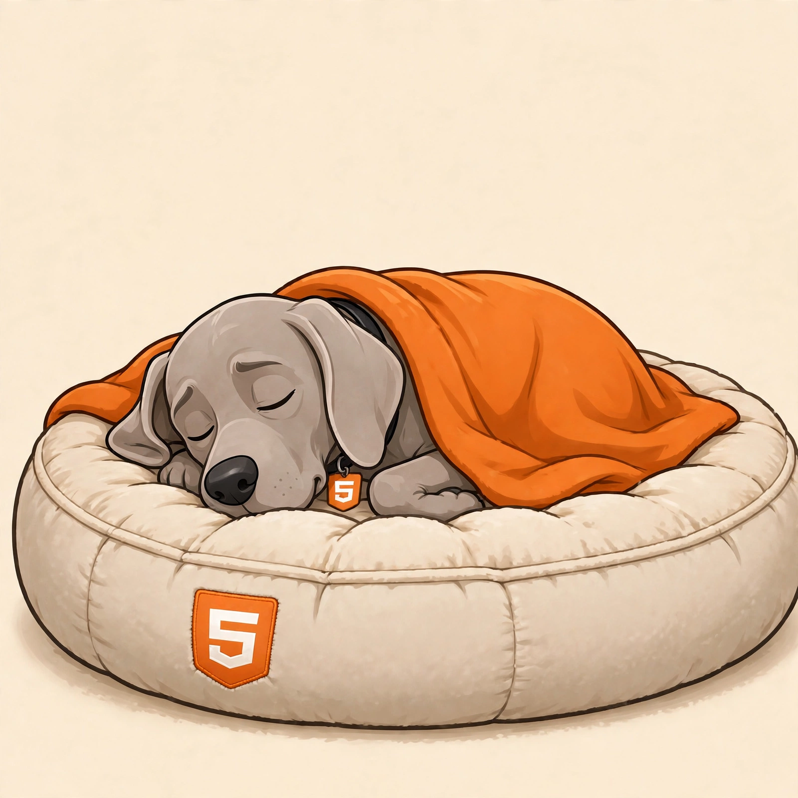
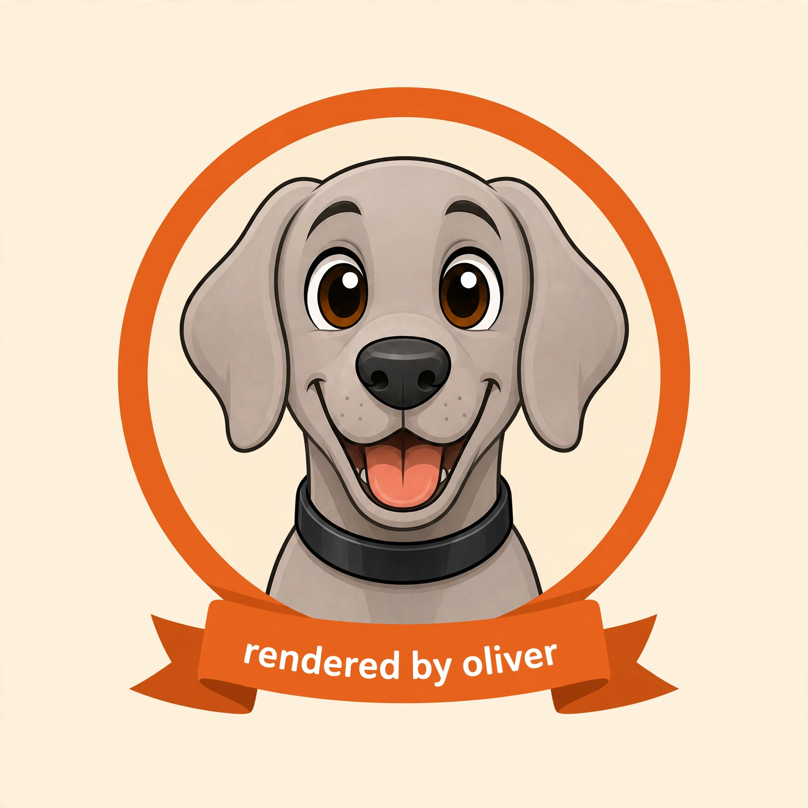

A Knap template plus a JSON object goes in, a finished HTML document comes out. One static binary — no runtime, no JavaScript, no database, no edit button.

template.knap + data.json --k4o--> Markdown --oliver--> HTML
k4o templates, oliver renders — dogbed joins data and document in one binary.
The knap-0.6.0 engine: loops, conditions, filters, typed values — spec first.
stdin in, stdout out, exit codes like a compiler. Errors never half-emit.
Highlights, math, callouts, task lists, footnotes — Oliver 1.3 parses them natively.
Grab a static binary from the releases page, or build from source — Zig 0.17.0 and zig build gives you zig-out/bin/dogbed.
Print the verdict starter and keep it — you own it now:
{{ title | h1 }}
{{ verdict | bold }} — {{ summary }}
{{ "Blockers" | h2 }}
{{ blockers | list }}
{{ "Nits" | h2 }}
{{ nits | list:numbered }}
Feed it data. This is the starter example:
{"blockers":[],"nits":["ship it"],"summary":"the pipeline sings","title":"dogbed 0.1.0 — first verdict","verdict":"approve"}
Render:
<h1>dogbed 0.1.0 — first verdict</h1>
<p><strong>approve</strong> — the pipeline sings</p>
<h2>Blockers</h2>
<h2>Nits</h2>
<ol>
<li>ship it</li>
</ol>
That block is the entire output — a bare HTML fragment, ready to pipe into something bigger. Add --title or --css and dogbed finishes the document for you. Keep reading: the CLI, knap templates, extensions, the document shell, the dogfood story, and the publishing pipeline.

rendered by dogbed — k4o templates it, oliver renders it